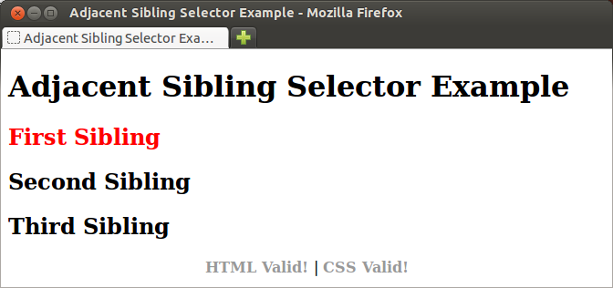
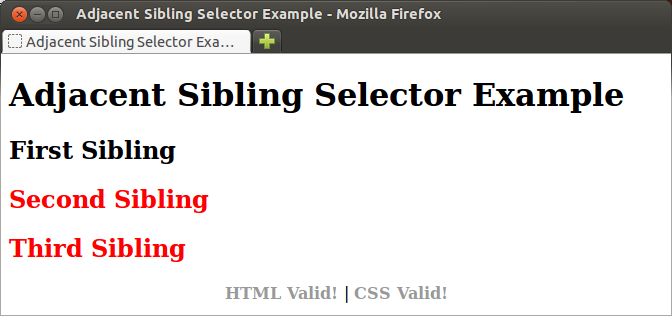

The elements styled by the basic
selectors from lesson 3 can be
identified independently of their position within the element tree. The
elements styled by what we will call the advanced
selectors, by
contrast, can only be identified by their specific relationships to other
elements in the element tree.
Decendant selectors are written as a sequence of space separated elements along
the path from the root (html) to the styled element. It is not
necessary or usual to list all elements in the path. Matching happens whenever
each element specified occurs in the correct order within the path.
ol a {
font-size: x-large;
}
The style above makes hyperlink (a) elements that are decendents
of ordered lists (<ol></ol>) have an extra large font
size.
li li li {
list-style-type: lower-roman;
}
This style sets doubly nested list elements to lower-roman style.
Child selectors are written as parent-child combination of elements seperated
by a > symbol.
section > h2 {
color: #F70;
}
This style makes h2 elements that are children of
section elements orange.
They can be chained together to select very specific sections of the element tree.
section > p > sup {
color: #F00;
}
This style makes sup elements that are children of p
elements that are children of section elements red.
Adjacent sibling selector selects an element that immediately follows another
element (its adjacent sibling). The two elements are separated by
a + symbol when writing the style.
The easiest way to demonstrate how sibling selectors work is to show you an
example. Download this
file to your computer. Open the file with a text editor, and notice that the
body contains one top level heading (h1) followed
by three second level headings (h2).
Add the following style to this document:
h1 + h2 {
color: red;
}
And the document will look like this:

Change the style to:
h2 + h2 {
color: red;
}
And the document changes to this:

Study this example until you understand why it works the way that it does.
Pseudo-classes behave like classes in html, but instead of being written explicitly using element attributes, they select elements implicitly by their relationship to other elements.
We have already seen the pseudo-classes for the hyperlink element in
lesson 3. CSS 1 provides an
additional pseudo-class that is very useful, the :first-child
pseudo-class. The following style:
p:first-child {
color: red;
}
will color the text in a paragraph that is the first child of its parent element red. You will explore how this works in more depth in the exercises.
CSS 3 introduces several new pseudo-classes, including:
| Psuedo-class | Example(s) or Description |
|---|---|
| :last-child | li:last-child |
| :nth-child( { number expression | odd | even ) | tr:nth-child(2n+1) or tr:nth-child(even) |
| :nth-last-child( { number expression | odd | even ) | Works like :nth-child, only it counts from last child instead of first. |
| :nth-of-type( { number expression | odd | even ) | p:nth-of-type(3n-1) or section > img:nth-of-type(odd) |
| :nth-last-of-type( { number expression | odd | even ) | Works like :nth-of-type, only it counts from last child instead of first. |
Pseudo-elements are used to style elements which don't actually exist in the HTML markup.
| Pseudo-element | Example / Description |
|---|---|
| :first-letter | p:first-letter Styles the first character of text within the element. |
| :first-line | p:first-line Styles the first line of formatted text within the element. |
| :before | p:before Specificies content to be inserted immediately before the selected element. |
| :after | p:after Specificies content to be inserted immediately after the selected element. |
learning_html.html document made as the extra credit exercise
in lesson 4 of
Getting Down with HTML that has all the in-line style
sheets removed (You didn't know back when you made it that you were using
in-line style sheets). Make the following changes to this document to style
it:
head.div element around the entire outline (the outer
most <ol></ol> tags) with a class attribute set to
outline(
class="outline").
div.outline li {
list-style-type: upper-roman;
}
Reload your page and notice what happened. All of the list items
items are now upper case Roman. Why? Think about how this works and
watch how it changes after the next step.
div.outline li li {
list-style-type: upper-alpha;
}
Again, reload your page and notice what happened. Take a few minutes to
convince yourself you understand why the top level list items are still
upper case Roman, but all other levels are now upper case Alpha.
div.outline li li li {
list-style-type: lower-roman;
}
Reload your page again. It should now be clear to you how these decendant
selectors work. Note that list item decendant selectors would work the
same way without the div element enclosing them, but that
may cause your style to effect other lists in your site that you didn't
want to effect. By having these styles start with div.outline,
only those lists you are explicitly intending to be outlineswill be effected.
div.outline
element, for example, and center the top level heading and footer. Change
the color, size, and text-decoration of the hyperlink elements inside
footer.webskills.html you created in the
Lesson 4 Exercises. If you were not
able to complete those exercises, you can use
this one. Again make the
following changes to this document to style it, reloading the document after
each change to see how it effects the document:
body {
margin: 50px;
background-color: #E6E6FA;
}
header h1 {
text-align: center;
color: #8B008B;
}
a, a:visited {
text-decoration: none;
}
nav {
display: table;
margin-left: auto;
margin-right: auto;
margin-top: 50px;
margin-bottom: 40px;
}
nav a, nav a:visited {
padding: 10px;
border: 1px dotted #777;
color: #4B0082;
background-color: #FFF;
font-weight: bold;
}
section {
background-color: #F6F6FA;
margin-top: 30px;
padding-left: 30px;
border: 1px solid #444;
border-radius: 25px;
}
section h1 {
margin-left: -15px;
font-size: 2.2em;
color: #6A5ACD;
}
section h2 {
color: #540093;
}
CSS buttonsfor the validation links in the footer:
footer {
text-align: center;
margin-top: 40px;
font-size: .9em;
}
footer a {
border: 1px solid #777;
padding-top: 2px;
padding-bottom: 2px;
padding-right: 2px;
margin-right: 10px;
background-color: #FFF;
}
a > strong {
background-color: #9932CC;
color: #FFF;
padding: 2px;
padding-left: 4px;
margin-right: 2px;
}
{kind=link}
{kind=link}